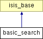

Main Page
Namespaces
Classes
Files
Class List
Class Hierarchy
Class Members
basic_search Class Reference
Inheritance diagram for basic_search:

List of all members.
Public Member Functions
basic_search
()
do_search
($words, $qtype= '')
get_num_rows
()
get_result_list
()
Public Attributes
$isis_rs
= false
$num_rows
= 0
$keywords
= ''
$qtype
= ''
The documentation for this class was generated from the following file:
contrib/igloo/lib/basic_search.inc.php
All
Classes
Namespaces
Functions
Variables
Generated on Tue Mar 30 14:47:14 2010 for IsisReader by
1.6.1
 1.6.1
1.6.1